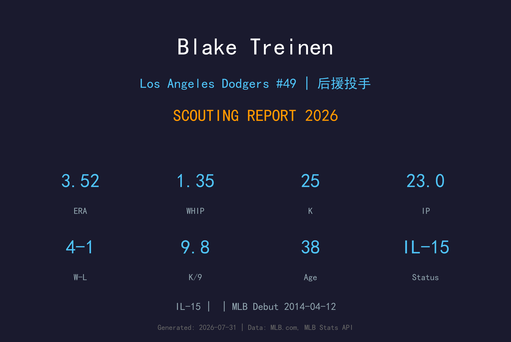
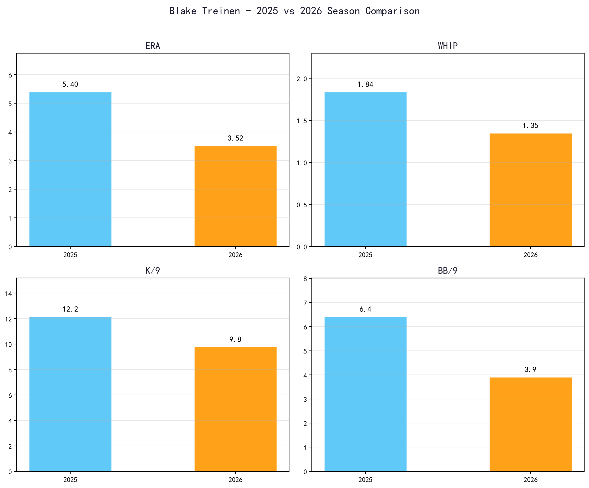
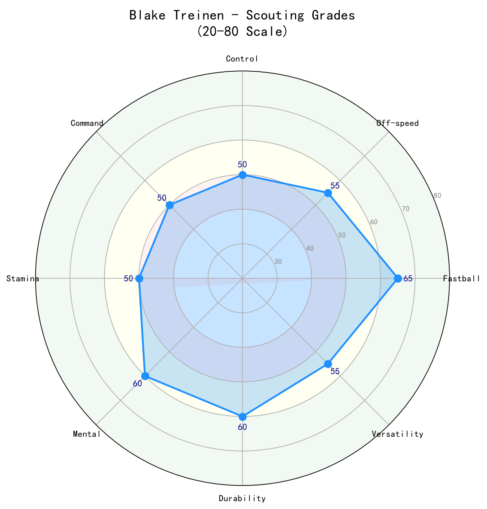

Los Angeles Dodgers #49 | 投手 | 伤病名单-15

Blake Treinen 是道奇牛棚中经验最丰富的老将之一，以极端下沉的快速球和招牌滑球闻名。他是 2018 年美联全明星与救援王，当季以 0.78 ERA 写下生涯巅峰；2020 年加盟道奇后成为 Roberts 教练在季后赛最信任的 布局（setup）man 之一，并随队夺得 2024 年世界大赛冠军。38 岁的 Treinen 球速 已不如巅峰，但凭借球质、经验与关键局面的心理素质，仍是道奇牛棚的定海神针。2026 年他因 伤病名单-15 短暂缺阵，回归后预计继续担任第 8 局setup 或终结者保险角色。
Blake Treinen 在 2011 年 MLB 选秀第 7 轮被选中，开启职业棒球生涯。
Blake Treinen 于 2014-04-12 (国民队) 登上大联盟，开始在高水平舞台展现自己的实力。
Blake Treinen 目前因伤位于 伤病名单-15 名单。恢复后，他将重新回到道奇的投手阵容中。

📈 上图为近三年核心数据趋势。柱状图高度代表该年度表现，便于快速比较球员状态的上升或下滑。
| 赛季 | G | W-L | SV | HLD | ERA | IP | K | BB | WHIP | K/9 | BB/9 |
|---|---|---|---|---|---|---|---|---|---|---|---|
| 2025 | 58 | 4-2 | 1 | 13 | 2.07 | 52.1 | 49 | 14 | 1.03 | 8.43 | 2.41 |
| 2026 | 29 | 4-1 | 1 | 6 | 3.52 | 23.0 | 25 | 10 | 1.35 | 9.78 | 3.91 |
注：2026 年数据截至进入 伤病名单-15 前，样本较小，需结合伤病恢复后表现综合评估。
Treinen 的签名球种，也是他的立命之本。球速虽较 2018 年巅峰期（97-100 mph）有所下滑，但下沉幅度依旧惊人，能制造大量滚地球。本垒打抑制能力优秀（HR/9 0.78），与这颗伸卡球的 滚地球 导向密切相关。
对右打者的主要出局球。横移幅度大，与伸卡球形成 speed-differential 与垂直/水平位移的双重落差。近年使用比例上升，是 Treinen 在 两好球 count 时的首选武器。
偶尔用来抢好球数或改变节奏，并非主力球种。由于伸卡球下沉效果更佳，四缝线更多作为 视线高度 的配球出现。
对左打者的罕见配球，使用比例不高，主要用来打乱击球节奏。随着年龄增长，若能提升这颗球的稳定性，可进一步降低 左右差距。
Treinen 采用低四分之三（low-three-quarters）到侧投（sidearm）的投球角度，出手点极低且靠近身体，造成右打者极大的视角不适。6 尺 5 寸的身高让他的伸卡球从更陡的角度进入好球带，放大下沉效果。随着年龄增长，他的动作节奏更趋简洁，避免过度消耗手肘与肩膀。
2026 年 7 月进入 伤病名单-15，具体伤病需以官方公告为准。38 岁高龄让每一次伤病都值得密切关注，球队预计会控制他的连续出赛与背靠背频率，以确保季后赛健康。

| 项目 | 评分 (20-80 量表) | 等级 |
|---|---|---|
| 伸卡球 (Sinker) | 60 | B+ |
| 滑球 (Slider) | 55 | B |
| 四缝线 (Fastball) | 45 | C+ |
| 变速球 (Changeup) | 40 | C |
| 控球 (控球) | 55 | B |
| 指挥 (控球精准度) | 60 | B+ |
| 心理素质 (Mental) | 70 | A |
| 耐力/健康 (Durability) | 40 | C |
| 滚地球制造 (GB Inducement) | 65 | A- |
38 岁的 Treinen 已非 2018 年的全明星终结者，但仍是道奇牛棚中不可或缺的 playoff-tested 老将。只要健康，他依然能在第 7-8 局稳定输出。
B 级 / 经验丰富的关键后援
Blake Treinen 出生于堪萨斯州 Osage City，高中时期同时参与棒球与美式足球。大学就读于阿肯色大学 Fort Smith 分校与南阿肯色大学，2011 年 MLB 选秀第 7 轮被奥克兰运动家选中。因肩部手术错过了 2011 年大部分赛事，后被交易至华盛顿国民队。
Treinen 以沉默寡言、场上冷静著称。他的低角度侧投被球迷形容为"从地面钻出来的球"，招牌伸卡球是教科书级别的 滚地球 pitch。他与妻子 Kati 育有子女，休赛期居住在堪萨斯州。